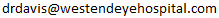
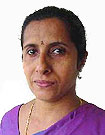

|
|
> CATARACT OPERATION
> LASIK
> GLAUCOMA
> SQUINT CORRECTION
> CONTACT LENSES - RIGID & DISPOSABLE
> SPECTACLES |
|
-
Out Patient Section:
WESTEND EYE HOSPITAL
High Court Junction
Banerji Road,
Cochin 31.
Kerala, India.
-
Surgical Wing
WESTEND EYE HOSPITAL
Near Vimalalayam,
Kacheripady, Chittoor Road
Cochin 18, Kerala, India.
Phones:
High Court Jn: (0484) 235 4452
Kacheripady: (0484) 329 3051
Mobile : (91) 94467 07272
e-mail : 
Call (0484) 235 4452 or 329 3051 for advance Booking | |
|
|
Dr. Tony Fernandez
inaugurated Westend Eye Hospital in Nov. 1997. Dr. Davis
J. Akkara, then Chief Ophthalmologist of Lourdes Hospital, Kochi
and his wife, Dr. Ethamma Davis who was earlier working in
Lourdes Hospital were in charge of the services of the Westend Eye
Hospital.
The Hospital is situated on the Banerji Road at the High Court
Junction. The hospital is so situated that it is easily accessible
to people form all over. The Hospital is equipped with state of the
art equipments for patient care. |
|
|
|
Dr. Davis J. Akkara -
MBBS, MS, DO
Consultant Ophthalmic Surgeon
Dr. Davis J. Akkara had his Basic Medical Training in St.
Johns Medical College, Bangalore, India. He did his
Postgraduation in Ophthalmology from Kasturba Medical
College, Mangalore. He was awarded the Best Outgoing
Student Gold medal From KMC, Mangalore.
>Read more |
|
|
 |
Dr. Ethamma Davis - MBBS,DOMS
Eye Specialist & Contact Lens Specialist
Dr. Ethamma
Davis had her Basic Medical training in Medicine from
Medical College, Kottayam, India. She did her Post
graduation in Ophthalmology from VS Institute of
Postgraduate studies, Ahmedabad, India.
>Read more | |